Hosszú távú támogatóink
Akik évek óta, folyamatosan segítik a munkánkat.
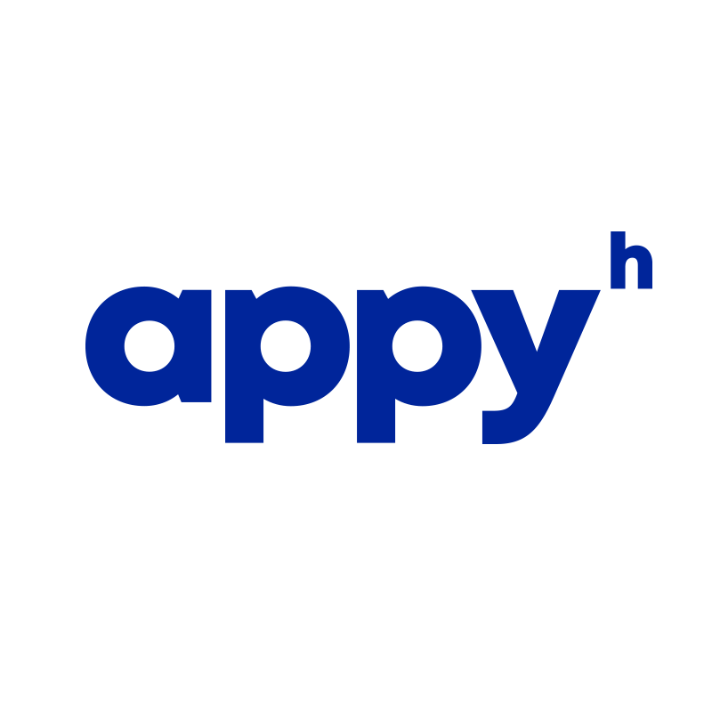
Appy Centrum — Irodával és szakmai tanácsadással támogatja az Amigos fejlődését.LEGO Foundation — Évek óta segít többezer beteg és szociálisan nehéz helyzetű gyereken.
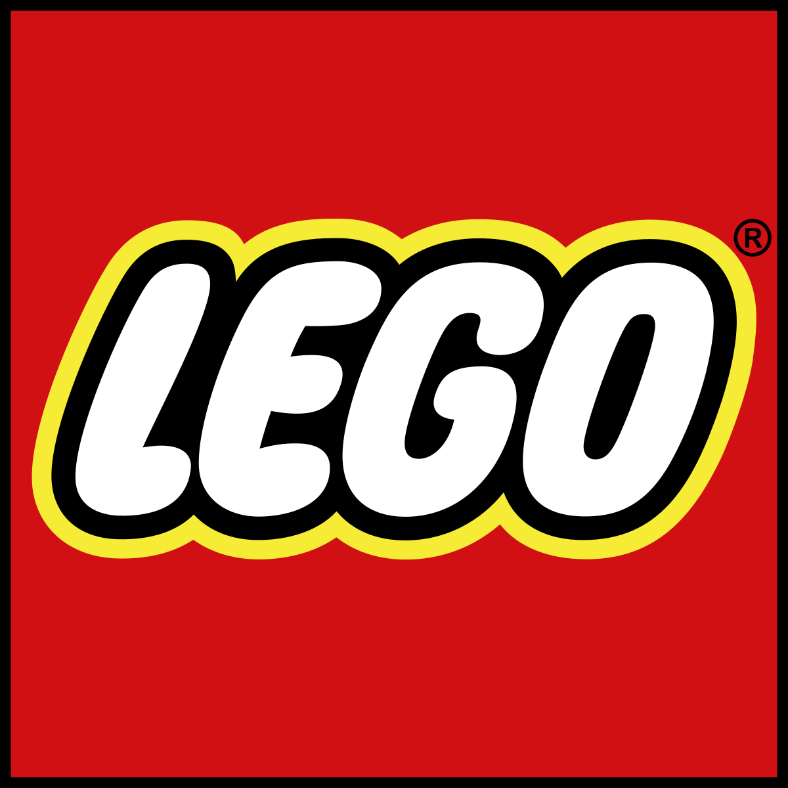
LEGO Csoport — Évek óta segít többezer beteg és szociálisan nehéz helyzetű gyereken.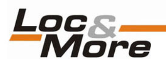
Loc&More Kft. — Hosszú távú partnerként három éven át támogatja az Amigost.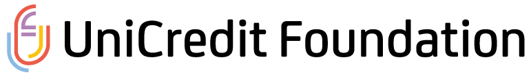
UniCredit Alapítvány — 2025-től segíti, hogy az oktatási kihívásokban érintett beteg gyerekeket minél több helyen elérjük.Stratégiai partnereink
Szolgáltatással, szakértelemmel és logisztikával segítenek, folyamatosan.
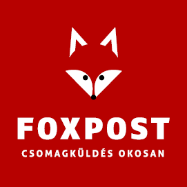
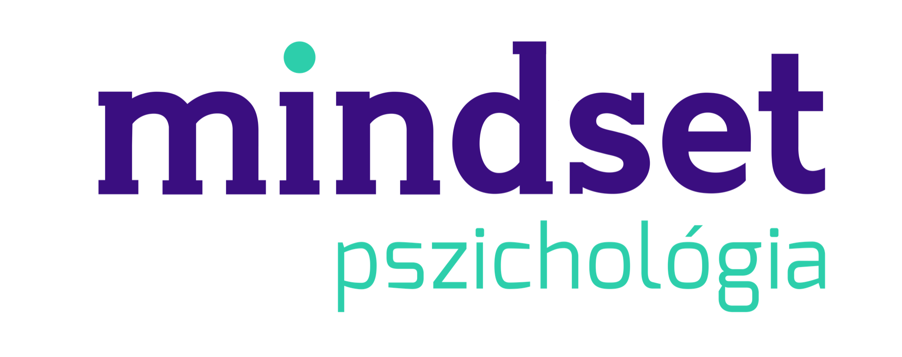
Kórházi örökbefogadóink
Cégek és magánszemélyek, akik egy-egy kórházi osztály teljes éves Amigos-jelenlétét biztosítják.
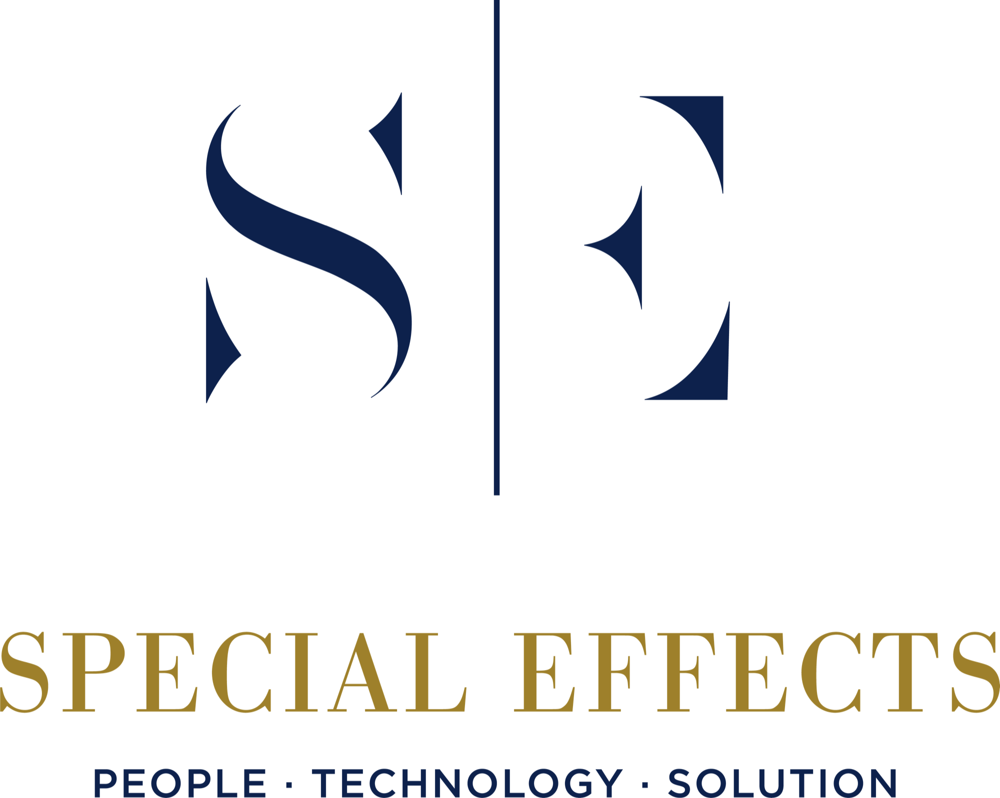
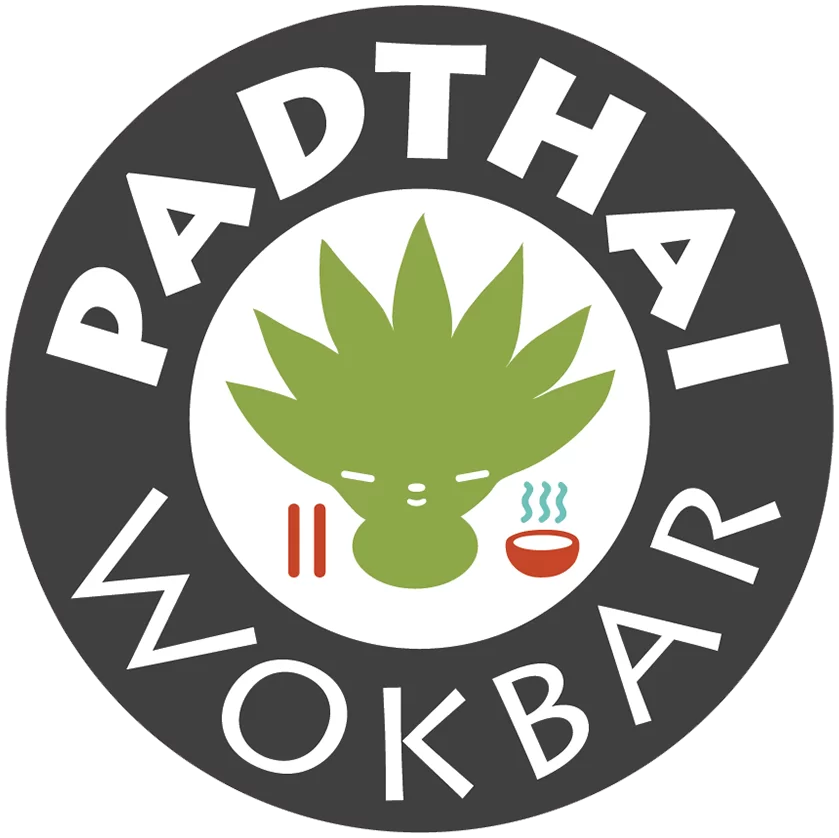
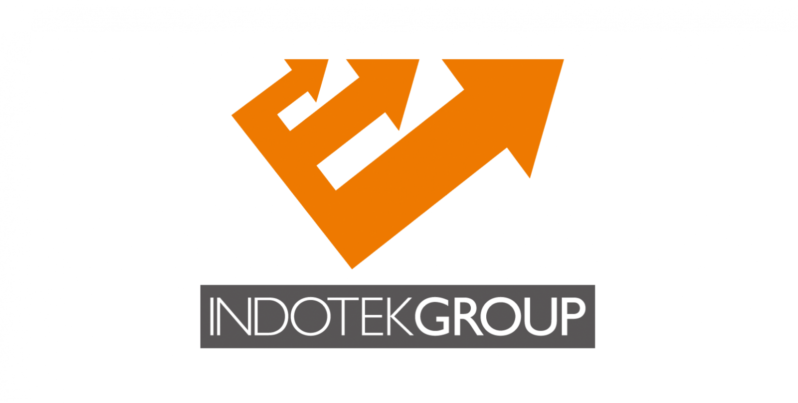
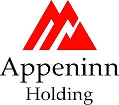
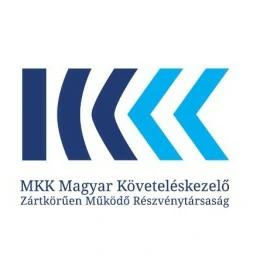
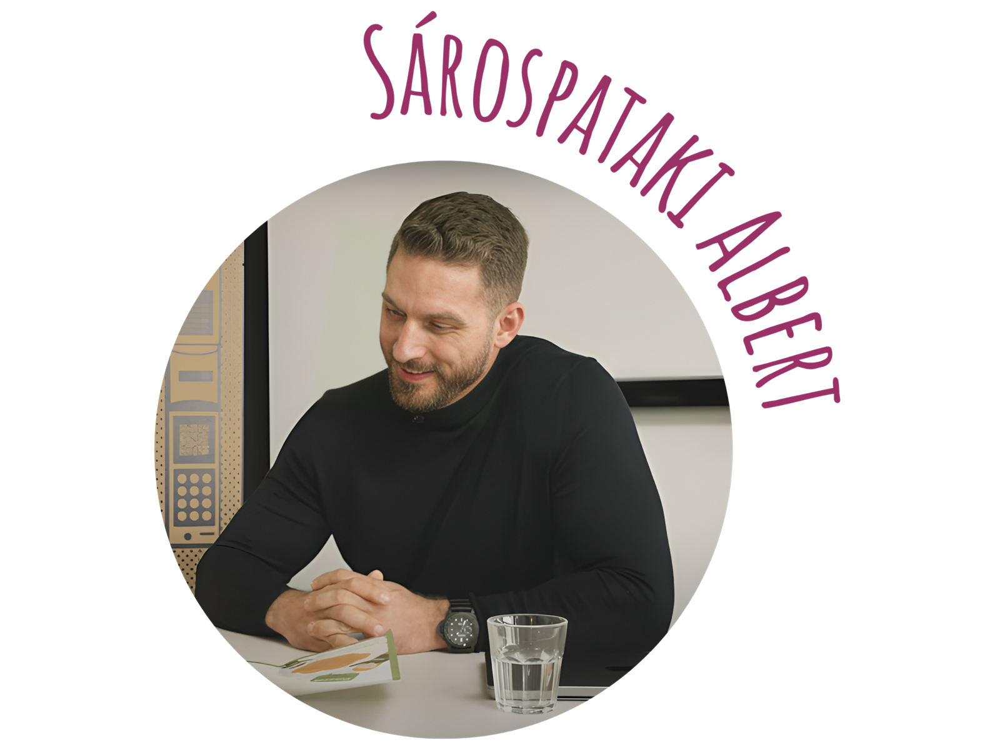
Cégként csatlakoznál? Fogadjatok örökbe egy kórházi osztályt, vagy találjuk ki együtt, hogyan segítenétek.